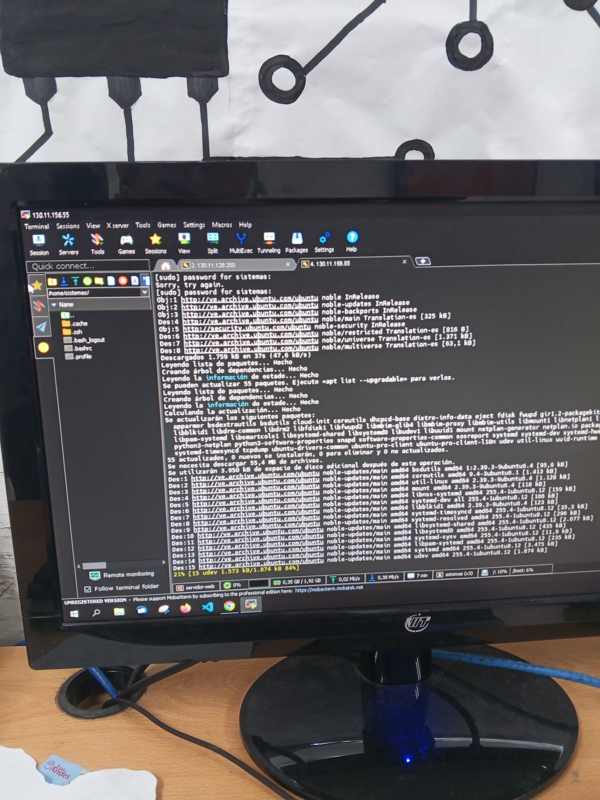

INGENIERO EN SISTEMAS
Tu empresa Necesita estar conectada.
La tecnología nos permite a las personas comunes hacer cosas extraordinarias.
La tecnología nos permite a las personas comunes hacer cosas extraordinarias.
Virtualización de servidores y gestión de contenedores (LXC).
Administración centralizada de servidores mediante MobaXterm .
Configuración avanzada de dispositivos de red como Routers y Switches.

Instalé el sistema operativo Proxmox VE en un mini servidor que yo armé. El proyecto incluyó la configuración desde cero de nodos físicos, almacenar las ISO necesarias para futuros proyectos y el despliegue de Máquinas Virtuales (MV), garantizando un entorno seguro, escalable y de baja latencia

Instalacion de una MV con Ubuntu Server. En este servidor se alojó un proyecto web desarrollado usando Angular, en el que se tuvo que ejecutar un comando para extraer una carpeta llamada dist ya que esta carpeta contiene solo archivos html, js y css livianos. Se creó el directorio donde colocamos los archivos que estan dentro de la carpeta dist, en este directorio se aloja en otras palabras, el Front-end. Por otro lado, para el Back-end primero instalé apache para el servidor web, luego realicé las configuraciones y puse a iniciar el Back-end

Configuración de un entorno de virtualización robusto y escalable con Proxmox VE. Gestión de múltiples nodos en clúster, facilitando la migración en vivo de máquinas virtuales (VMs) y contenedores (LXC) para garantizar alta disponibilidad y balanceo de carga.


Uso estratégico de contenedores **LXC** para microservicios y aplicaciones ligeras. Reducción significativa del consumo de recursos en comparación con máquinas virtuales completas, mejorando la eficiencia y la velocidad de despliegue.


Configuración de un entorno de virtualización robusto y escalable con Proxmox VE. Gestión de múltiples nodos en clúster, facilitando la migración en vivo de máquinas virtuales (VMs) y contenedores (LXC) para garantizar alta disponibilidad y balanceo de carga.

Uso estratégico de contenedores **LXC** para microservicios y aplicaciones ligeras. Reducción significativa del consumo de recursos en comparación con máquinas virtuales completas, mejorando la eficiencia y la velocidad de despliegue.

Configuración de un entorno de virtualización robusto y escalable con Proxmox VE. Gestión de múltiples nodos en clúster, facilitando la migración en vivo de máquinas virtuales (VMs) y contenedores (LXC) para garantizar alta disponibilidad y balanceo de carga.